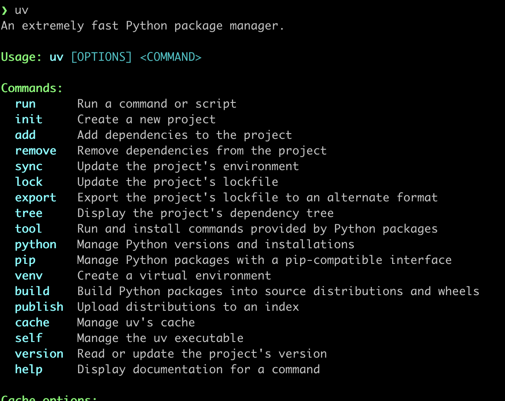

During BoBiAC, we will work with a package and project manager called uv.
To avoid delays—especially if you're using an institutional laptop with restricted permissions—we would like you to try to install uv in advance.
Please follow the instruction below depending on your operative system (Mac or Windows).
Open Terminal (found in Applications → Utilities → Terminal) and copy & paste one of the following commands and press enter:
1. Using curl:
curl -LsSf https://astral.sh/uv/install.sh | sh2. If curl isn't available, use wget:
wget -qO- https://astral.sh/uv/install.sh | shTo test whether the installation succeeded, please refer to Testing the uv Installation section below.
Open PowerShell (you can find it by searching for "PowerShell" in the Start menu), copy & paste one of the following commands and press enter:
1. First try the standalone installer:
powershell -ExecutionPolicy ByPass -c "irm https://astral.sh/uv/install.ps1 | iex"2. If you encounter execution policy issues and cannot or do not want to change your policy settings (see this guide), try using winget:
winget install --id=astral-sh.uv -e3. If neither of the above methods works, download uv directly from GitHub. In the "Download uv" section, choose the version that matches your system (e.g., x86 or x64 Windows).
To verify that the installation was successful, follow the instructions in the section below.
To test the installation, in your Terminal (Mac Users) or PowerShell (Windows Users), simply type the following command and press enter:
uvYou should see the uv help message if the installation was successful.
If the command is not recognized, try restarting your Terminal or PowerShell (close and reopen it) and run the command again.